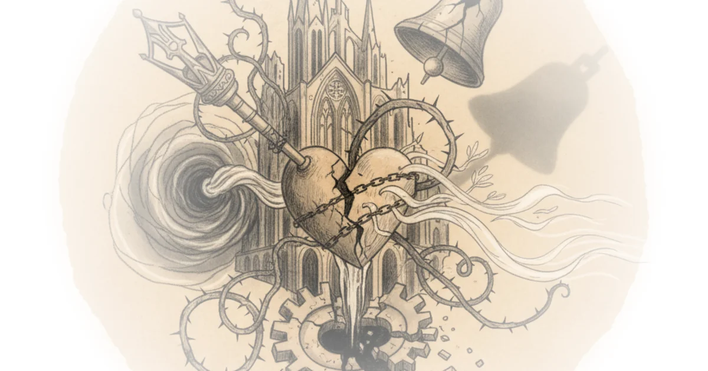

This piece from The Pillar delivers a startling geopolitical pivot: the 16-year political project that fused Hungarian state power with Catholic identity has collapsed in a single election cycle. The coverage is notable not for predicting the outcome, but for dissecting the intricate, often uncomfortable machinery of Church-state entanglement that defined the era, and for asking whether the new leadership can untangle it without breaking the Church's institutional backbone.
The End of an Entanglement
The article frames the April 12 parliamentary election as a definitive rupture, where the incumbent Fidesz party, which had "invested heavily in relations with the local Church and Rome," was swept aside by the Tisza party. The Pillar reports that the result was a landslide, with Tisza winning 141 seats—far exceeding the 100 needed for a majority—while Fidesz was reduced to a mere 52. This is a massive shift from the 2022 election, where the governing party held a commanding grip. The piece argues that this was not a simple change of personnel but a fundamental regime shift, quoting the new leader Péter Magyar: "The regime has fallen, and the Hungarian people have voted for a change of system."

The commentary here is sharp in its historical grounding. It reminds readers that the Orbán administration had spent years curating a specific brand of "illiberal democracy" that aligned with conservative Catholic social teaching on family and life, even as it clashed with Pope Francis on migration. The Pillar notes that despite these policy divergences, the relationship deepened, highlighted by two visits from the Argentine pope and multiple meetings between Orbán and the Vatican hierarchy. The article suggests this closeness was a strategic asset for the administration, allowing it to "style Hungary" as a bastion of Christian Europe while reshaping domestic institutions.
"The independent voice of churches and the civil world has been replaced by subservience instead of cooperation. This was comfortable for some, but it meant a serious loss for the communities and for society as a whole."
This quote from the Tisza manifesto, cited by the piece, strikes at the heart of the new administration's critique. It reframes the previous era's "cooperation" as a form of corruption where the Church lost its prophetic distance. The Pillar's analysis holds weight here: when a religious institution becomes too cozy with the state, its moral authority often becomes collateral damage. The new government promises a reset, pledging that "churches and civil organizations will not be subordinates, but equal partners of the state."
The Man Behind the Movement
The coverage of Péter Magyar is nuanced, avoiding the trap of painting him as a saint or a savior. The Pillar details his background as a Catholic-educated lawyer who rose through the Fidesz ranks before breaking away over a scandal involving a pardon for a man who covered up abuse in a state-run children's home. This detail is crucial; it grounds the political upheaval in a specific moral failure that implicated the highest levels of the previous administration and its religious allies. The piece notes that the pardon was reportedly granted following a request by the presiding bishop of the Reformed Church, a fact that "triggered debate about the closeness of Church-state ties."
Magyar's personal faith is described as ambiguous but present. The article highlights his pilgrimage-style walk from St. Stephen's Basilica to a statue of St. Ladislaus and his wearing of a wooden cross during the campaign. He adopted the motto "Do not be afraid," echoing Pope John Paul II. However, the piece wisely cautions against over-interpreting these gestures. The Pillar observes that Magyar "skilfully avoided defining himself too sharply on the most controversial issues," allowing voters to project their own hopes onto him. This ambiguity is a double-edged sword. While it secured a broad coalition, it leaves the Church wondering where he stands on bioethics and other doctrinal flashpoints.
Critics might note that the article's reliance on Magyar's campaign rhetoric risks overlooking the pragmatic realities of governance. The piece acknowledges this tension, quoting the Hungarian Christian news site Szemlélek: "Although the Tisza party could form a government on its own, it is backed by a true 'grand coalition' of diverse ideologies among its voters." The spectrum of support ranges from "Marxists to disillusioned Fidesz supporters," making it "incredibly difficult to satisfy such a diverse crowd."
A Church in Transition
The final section of the piece turns the lens inward on the Hungarian Church itself, noting a potential leadership vacuum. Cardinal Péter Erdő, the Archbishop of Esztergom-Budapest, is approaching the mandatory retirement age of 75 and has faced significant health struggles. The Pillar reports that he issued a brief audio message for Easter while recuperating, adding to the sense of uncertainty. This timing is critical. As the political landscape shifts, the Church is also facing a generational transition.
The bishops' conference had previously issued a statement regretting the "coarse" nature of the campaign and emphasizing that they were "not a political organization." Yet, the article points out the contradiction: individual priests and bishops were still seen at Fidesz campaign events, a testament to the "intricate links formed between Church and state during the party's long stint in power." The Pillar suggests that the Church now faces a difficult task: rebuilding its independence while maintaining its social influence in a country where Mass attendance is declining and the "vocations crisis" continues.
"Our mission is to serve the salvation of souls. Our task is to work with dedication for the physical and spiritual well-being and progress of our country and our people, for families, for those in need, for the education of youth, for justice, and for peace."
This quote from the bishops' council serves as a declaration of intent, but the piece implies it is easier said than done. The Church must now navigate a new political reality where its previous patron is out of power, and its new partner is a man whose theological commitments are not fully mapped. The Pillar notes that the 2022 census showed only 29% of Hungarians identified as Catholic, though this may be an undercount. Regardless, the demographic reality means the Church cannot rely on state patronage to sustain its relevance.
Bottom Line
The Pillar's strongest contribution is its refusal to view this election as merely a political turnover; it correctly identifies it as a structural crisis for the Hungarian Church's relationship with the state. The piece's biggest vulnerability is the inherent uncertainty of the new leadership's long-term trajectory, a gap the article acknowledges but cannot yet fill. Readers should watch closely for how the new government handles the 1% income tax donation mechanism and whether the Church can successfully rebrand itself as an independent moral voice rather than a state partner.